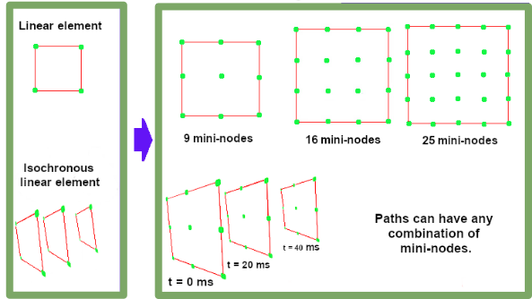
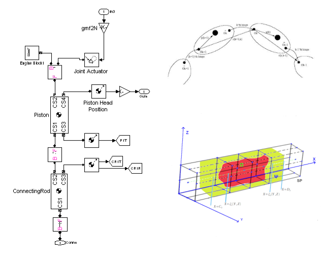

ARXDE™ is a specialized resource, built on our experience and passion for the field of mathematics and engineering.
Our recognized expertise in these domains allows us to develop computer programs for data processing, capable of satisfying the most specific requirements.
We publish articles, books and participate in various conferences using ARXDE™ data and image processing resources for the creation of three-dimensional models, respectively for the integration of artificial intelligence and automatic learning in the technology of working with large volumes of data.


Engineering Archive
An infinite journal of engineering solutions, internationally recognized and continued with your help.
Science archive
A collection of research topics from different fields of science. A real source of inspiration for future researchers and not only that.
Articles:


Scientific research and engineering services.
Benefits of ARXDE™:
⬦ Technological consulting and prototype design starting from mathematical models simulated on the computer.
⬦ Development and testing of calculation methods, algorithms and software.
⬦ Advanced studies in the field of mechanics that allow us to offer mathematical and scientific research services especially in the field of autonomous vehicle technology and mechanical engineering.
⬦ IT project management.


- 


- 


Development and testing services.
The range of innovative ARXDE™ services includes:
⬦ The design of mathematical models, measurement systems, scientific and technological instruments.
⬦ Design and development of testing and analysis methods in the automotive industry and mechanical engineering.
⬦ Computer-assisted scientific analysis services.
⬦ Research and development, scientific testing and computer-aided engineering services as well as scientific laboratory testing services.
Editorial services.
The range of ARXDE™ editorial services includes:
Publication of materials that can be accessed through databases or the Internet.
Writing and publishing texts as part of engineering design and consulting services.
Publication of journals based on the developed measurement and testing methods.
News
If you want to be included in the e-mail list of the ARXDE™ server, you can contact us at: info@arxde.ro
Contact
E-Mail: info@arxde.ro
Locations: Timişoara, Deva